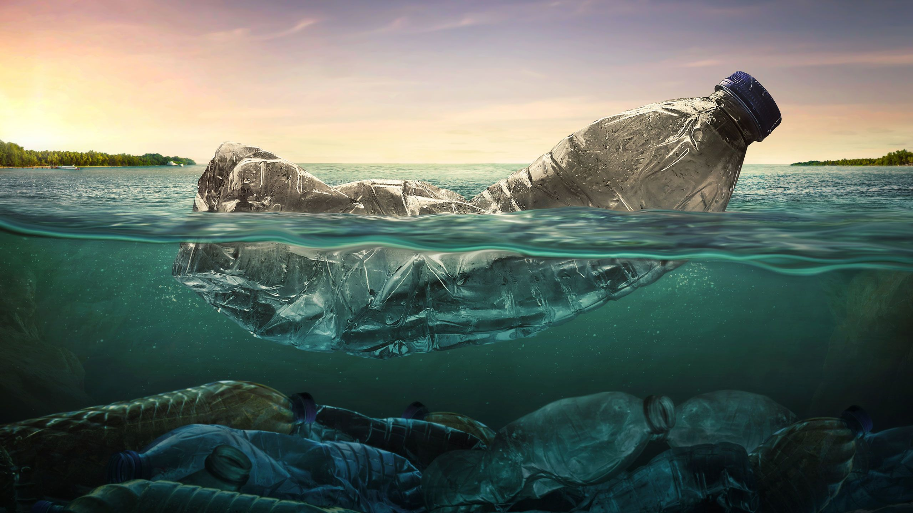

Да опазим и изчистим нашия "дом"
Защо да не го направим? Защо изхвърляме боклука си, там където не трябва?

Защо да не го направим? Защо изхвърляме боклука си, там където не трябва?
Нашите ограничени резерви от природни ресурси бързо се изчерпват, особено с растящото използване на предмети за еднократна употреба и опаковки. Светът рециклира милиони тонове от тях. Растящото ниво на използване и депониране нанася огромни щети върху невъзобновяемите и незаменими природни ресурси от нашите гори и мини. Преработката на употребявани материали за направата на нови продукти и опаковки намалява консумацията на природни ресурси. С рециклирането на милиони тонове отпадъци, милиони тонове руди, въглища, варовик, нефт и много други са съхранени. Чрез рециклираните вестници, списания, офисна хартия и опакоки, милиони дървета се спасяват. Рециклирането често създава по-качествени продукти от тези, произведени от първични суровини; например, калаят в консервните кутии е много по-чист (а с това и по-стойностен) след като е бил рециклиран. Намаляването на причинителите, генериращи отпадъци, може още повече да намали нуждата от депониране и да съхрани много повече природни ресурси.

Връзка към National Geographic "Световен ден за опазване на околната среда"